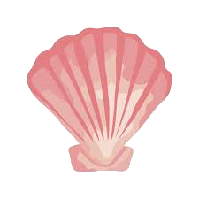

ˏ 𓏧 𓏲 𓏲 𓏲 𓋒Graphicdesign𓋒 𓏲 𓏲 𓏲 𓏲 𓏧 ˎ
By utilizing font, images, and illustration, graphic design is a method of visual problem-solving and communication.
Types of Graphicdesign

Branding and Identity Design
Packaging Design
Print Design
Digital Design
Advertising Design
Tools for Graphic Design
To produce their designs, graphic artists frequently make use of a variety of tools, such as:
Adobe(Photoshop, Illustrator, InDesign)
Paint
Paint.net
Affinity Designer
Canva
GIMP
‧̍̊˙· 𓆝.° ｡˚𓆛˚｡ °.𓆞 ·˙‧̍̊
Types of graphics
there mainly are Vector and raster graphics
Vector
Paths, which have a start and end point as well as additional points, curves, and angles along the way, are the building blocks of vector graphics. They can be scaled without losing quality and are independent of resolution. Examples include typography, drawings, and logos.
Raster
Pixels are placed in a grid to create raster graphics, commonly referred to as bitmap graphics. They can become pixelated or blurry when enlarged since they have a set resolution. Web graphics, digital paintings, and pictures are some examples.
‧̍̊˙· 𓆝.° ｡˚𓆛˚｡ °.𓆞 ·˙‧̍̊
The goal of pice
In order to accomplish a desired result, such as boosting aesthetic appeal, changing composition, deleting unnecessary features, or adding special effects, picture editing aims to enhance or manipulate images. Whether creating an image for personal or professional use, the ultimate goal is to create a final product that satisfies the required standards.
What can you all edit?
Brightness and contrast
Color balance and saturation
Sharpness and blur
Cropping and resizing
Removing unwanted elements or blemishes
Adding special effects such as filters and text
Adjusting the composition and balance of an image
Enhancing specific areas of an image
Replacing backgrounds
Modifying facial features and body shape
‧̍̊˙· 𓆝.° ｡˚𓆛˚｡ °.𓆞 ·˙‧̍̊